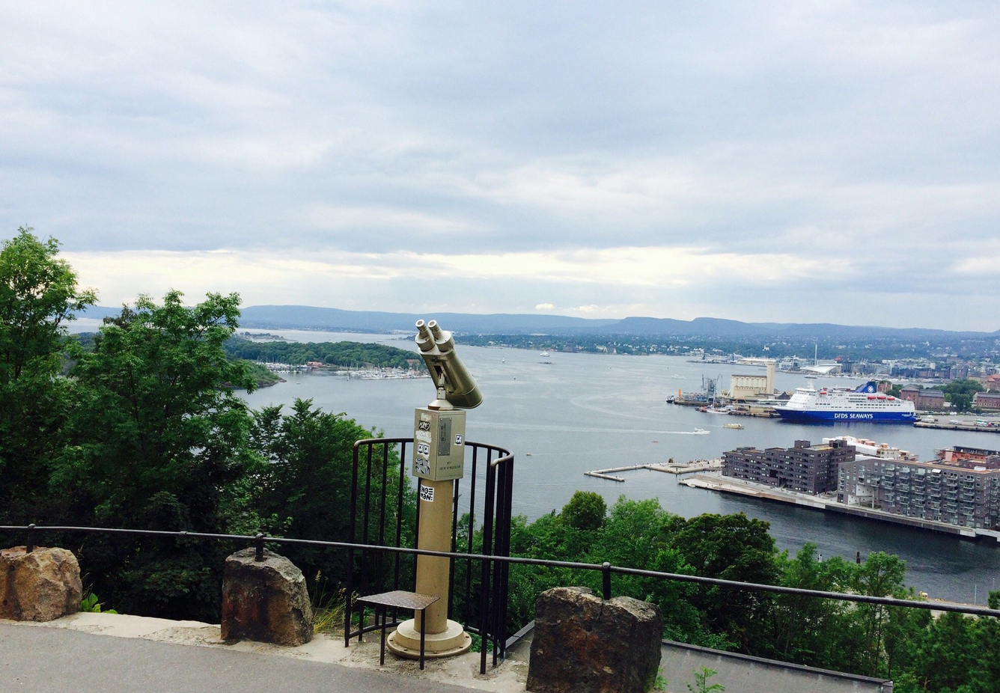
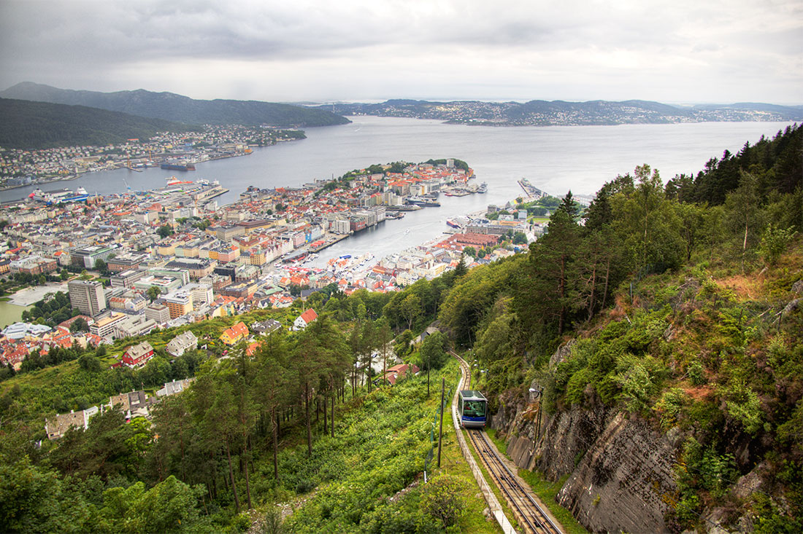

Форма правления — конституционная монархия, форма государственного устройства — унитарная. Король — Харальд V, премьер-министр — Йонас Гар Стёре. Норвегия подразделяется на 11 фюльке (губерний), которые в свою очередь делятся на 356 муниципалитетов.
История страны началась задолго до появления прославленных викингов и не закончилась с завершением их эпохи — хотя, конечно, пребывание Норвегии в различных скандинавских униях резко снизило её политическую и экономическую роль и на долгие годы отодвинуло королевство на периферию Европы. Полностью независимой Норвегия является немногим больше столетия, но за это время она превратилась из малозначимой «провинции» в важную европейскую державу — во многом благодаря обнаруженной здесь нефти.
Как и у соседей-скандинавов, путь развития Норвегии несколько отличался от общеевропейского, что, безусловно, было связано с отдалённостью страны от «центра цивилизации», представленного такими могущественными и влиятельными государствами, как Франция, Германия и Италия.Поскольку Вторая мировая война нанесла серьёзный удар по экономике Норвегии, нередко также выделяют период фашистской оккупации.
Существует также и другая градация норвежских эпох — не столь подробная и акцентирующая внимание на политическом положении страны: за Средневековьем следуют периоды уний — сначала Кальмарской и датско-норвежской, затем шведско-норвежской; далее говорят о первых годах независимости Норвегии (1905—1914) и, наконец, о полностью свободной Норвегии после 1945 г.
Норвегия расположенная на северо—западе евроазиатского материка, на Скандинавском полуострове. Норвегия имеет выход сразу к трём морям: на юге она омывается водами Северного моря, на западе – Норвежского и на севере – Баренцева. Также на юге Норвегию омывает пролив Скагеррак. Вдоль всего побережья проходит тёплое морское течение Гольфстрим. Норвегии принадлежит около 50 000 островов, крупнейшие из которых, включая архипелаги: архипелаг Шпицберген, Лофотенские острова, остров Ян—Майен. Площадь всех этих территории составляет 385 186 км². Самая северная точка страны, мыс Нордкин, одновременно является самой северной точкой континентальной Европы. На самой южной точке континентальной Норвегии, выходдящей на пролив Скагеррак, расположен маяк Линдеснес. Граничит Норвегия на северо—востоке с Финляндией и Россией, на востоке – со Швецией. Норвегия – горная страна. Почти всю ее территорию занимают Скандинавские горы, сильно расчлененные фьордами и прорезанные глубокими долинами. Самая большая река Норвегии – Гломма, в 12 км от устья которой находится водопад высотой 22 м. Здесь более 200 озер, которые занимают около 4,5 % территории страны.
В прибрежных областях, благодаря влиянию Гольфстрима и Северо—Атлантического течения, умеренный морской климат (на крайнем севере – субарктический). Во внутренних областях, особенно в горных районах, климат континентальный – более жаркий летом и холодный зимой. В северной части страны, за Северным полярным кругом, в разгар лета – полярный день, а зимой властвует полярная ночь. Температура января составляет от + 2°С на юго—западе до - 12 °С на севере, июля - от + 15 °С до + 6°С соответственно, хотя иногда воздух прогревается до + 25 °С даже на севере. Осадков выпадает от 300 мм в год на востоке страны до 3000 мм на западных склонах гор.
Лучшие блюда национальной норвежской кухни – лаки (жареный или копчёный лосось), креветки, копчёная сушёная треска, норвежский козий, китовое мясо. Основу норвежской кухни составляет рыба и продукты моря. Рыбу едят в жареном, копченом и вяленом виде. Наиболее популярными являются треска, сельдь, камбала и палтус. Любимое национальное блюдо «клип – фикс» (высушенная на скалах и обезглавленная треска). Также популярны «лаки» – жаренный или копчёный лосось и креветки. Большим спросом пользуются блюда в отварном виде из горбуши и лосося под белым соусом и овощным салатом. К особенностям скандинавской кухни относится потребление тушеного китового мяса (морской говядины). Очень популярен норвежский козий сыр (в том числе «браун чиз» со вкусом варёной сгущёнки). Сейчас самым популярным напитком норвежцев является кофе. Также популярно пиво, которое ранее изготовляли почти в каждой семье. Из картофеля дистиллируют крепкий скандинавский алкогольный напиток «аквавит». Особая разновидность норвежского «аквавита» носит название «линье—аквавит», этот напиток перед продажей везут в Австралию и обратно, и благодаря долгому путешествию лучше впитывает аромат дерева, из которого сделаны бочки.
По соседству с оперным театром в 2020 г в Осло открылась новая главная библиотека, которая стала еще и достопримечательностью. Это пятиэтажное здание со стеклянными окнами в пол является общественным пространством, в котором помимо чтения есть чем заняться. Здесь на полках хранится 450 тыс. книг.
В Осло есть удивительный парк скульптур Вигеледа, являющийся частью огромного парка Фрогнер. Там размещено 227 скульптурных композиций, передающих разнообразные состояния человека.
Экеберг можно назвать скорее лесом, чем парком, настолько хороша там дикая природа и свежий воздух. Располагается Ekebergparken на вершине холма, поэтому с обзорной площадки можно посмотреть прекрасные виды на город и Осло-фьорд.

Здесь постоянно выставлено порядка 5 000 экспонатов: речь идёт о картинах, фотографиях и скульптурах мастеров Норвегии и стран Европы, творивших после 1945 года.
Почётный деревянный плот «Кон-Тики», на котором отважный путешественник из Норвегии Тур Хейердал и пятеро его товарищей переплыли Тихий океан – самый интересный экспонат. По периметру зала представлено много материалов, рассказывающих об этой экспедиции: воспоминания членов команды, фотоснимки, карты.
Трасу длиной 850 метров и высотой 300 метров вы преодолеете всего за 6 минут. По прибытии наверх можно оглядеть близлежащие просторы со смотровой площадки Флетраппене, насладиться видом на город, фьорды и водное течение, пробивающееся к Северному морю и от него.

С середины 13 века эта крепость охраняла вход в залив Воген. Нынешний вид крепости во многом обязан культуре 19 века, однако здесь представлены сооружения, постройка которых датируется промежутком между 13 и 20 веками (например, немецкие бункеры времен Второй мировой войны).
В 1955 году пожал охватил весь район, после его тушения на месте развалин были проведены археологические раскопки. Открытия, сделанные в ходе этих раскопок, показали детали средневекового быта и торговли в Брюггене. Всё, что было найдено, теперь находится в старинном музее, основанном неизвестными мастерами. В витринах музея выставлены средневековые гири, ювелирные изделия и множество рунических надписей, выгравированных на дереве.
На Лисем острове, который находится в пригороде Фана, расположена очень романтическая вилла 1873 года постройки, которая принадлежала знаменитому норвежскому скрипачу Оле Буллу.
Бергенская Королевская резиденция, банкетный зал и зал Хокона были построены специальная для норвежского короля Хокона Хоконссона в 1261 году. В 1950 году была проведена полная реставрация здания и по сей день оно открыто для посещений круглый год. Неподалеку возвышается башня Розенкранца, датируемая 1270-ми годами.
Норвежский музей автомобилей в городе Лиллехаммер рассказывает историю транспортных средств Норвегии, в частности, автомобилей местного производства с начала 1900-х гг. до 1950-х гг., когда была выпущена последняя модель – "Тролль".
Парк развлечений Хундерфоссен, расположенный в 13 км от Лиллехаммера, - это мир, созданный знаменитым режиссером Иво Каприно посреди волшебного леса. Сказочная страна с собственной фермой, рафтингом и несколькими бассейнами.
Крупнейший в Норвегии музей деревянного зодчества. В Maihaugen музее собрано около 200 домов собранных по всей Норвегии. Самые старейшие из них датируются XIII веком.
В 1994 году в Лиллехаммере проводились зимние олимпийские игры. Естественно, к знаменательному событию были построены обширные спортивные сооружения. Сейчас они работают для всех желающих в режиме аттракциона.
Проект фасада был создан норвежским художником Бардом Брейвиком. Его основной целью было воплотить в жизнь образ яркой падающей звезды, символизирующей бесценный вклад художника Вейдеманна в развитие норвежской живописи. Фасад выполнен из полированной нержавеющей стали, дополненной динамичным рельефом.
В 1030 г. Олаф Святой пал в битве у Стиклестада, и вслед за этим христианство всерьез укрепилось в Норвегии. Вначале над могилой Олафа была установлена небольшая деревянная часовня. Позднее была построена церковь из камня, которая и положила начало тому собору, который существует сегодня.
Стифтсгарден, построенный в 1774 году амбициозной вдовой тайного советника короля Норвегии, является самым большим деревянным дворцом в Скандинавии.

Большой музей под открытым небом с деревянными зданиями и сценами из жизни Тронхейма и Трёнделага. Красивые крытые выставки: «Образы жизни», - изображают жизнь в регионе за последние 150 лет, еще одна уникальная достопримечательность Тронхейма.
Дворец архиепископа в Тронхейме является одним из наиболее хорошо сохранившихся комплексов зданий в своем роде в Европе. Это самое старое светское здание в Скандинавии. Строительство началось во второй половине 12-го века, и дворец был резиденцией архиепископа до Реформации в 1537 году.
Национальный музей декоративного искусства является домом для обширной коллекцией исторических и современных артефактов, включая мебель, серебро, стекло, текстиль и керамика, начиная с 15 - го века. Сам музей представляет собой произведение искусства, его интерьер создан известным бельгийским архитектором Генри ван де Вельде в 1907 году.
О стране:https://clck.ru/9cRSj
История:https://clck.ru/akTNo
Герб:https://clck.ru/akSfo
Нац.животное:https://clck.ru/akShf
Краткое содержание:https://clck.ru/akSpT
Климат:https://clck.ru/akSqh
География:https://clck.ru/akTMt
Еда:https://www.sta-travel.ru/norvegiya/eda
Достопримечательности Тронхейм:https://clck.ru/akSr9
Олимпийский парк:https://clck.ru/akTCr
Парк Хундерфоссен: https://clck.ru/akSro
Парк Лиллехаммер:https://gid.turtella.ru/Norway/Lillehammer/sights/
https://trip-together.ru/lillehammer/
Фотографии:https://clck.ru/9cRSj
https://clck.ru/akTQu
https://clck.ru/akTR8
https://clck.ru/akTRT
https://clck.ru/akTRf
https://clck.ru/akTY3
Cократитель ссылок: https://clck.ru/